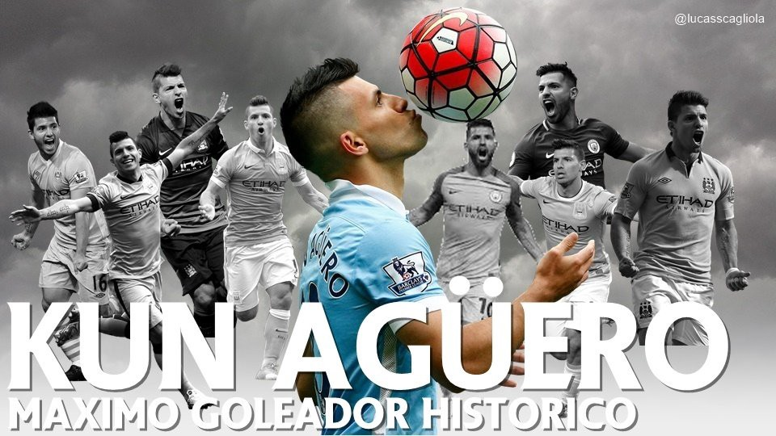

Home
Sergio Leonel Agüero del Castillo (Buenos Aires; 2 de junio de 1988) es un exfutbolista argentino que jugaba como delantero. Conocido comúnmente como Kun Agüero, sobrenombre que toma de un apodo de la infancia basado en el protagonista de la serie anime infantil Kum Kum.
Agüero inició su carrera jugando para Independiente de Avellaneda, y el 5 de julio de 2003 se convirtió en el jugador más joven en jugar en la Primera División de Argentina, en el día de su debut con 15 años y 35 días, batiendo el récord que ostentaba Diego Maradona desde 1976.
Tras una notable temporada 2005-06 fue transferido al Atlético de Madrid, donde se consolidó como uno de los jugadores de mayor proyección en Europa, ganando el Premio Don Balón, el Golden Boy —considerado como el Balón de Oro a los menores de 21 años—, y el Premio World Soccer al Mejor Jugador Joven del Mundo. Agüero anotó 101 goles en 234 partidos con el Atlético, ganando la Liga Europa y la Supercopa de Europa antes de recalar en el que fue el club más trascendente de su carrera, el Manchester City Football Club inglés, y al que debe sus mayores éxitos y reconocimientos.En la última jornada de su primera temporada con «los citizens», anotó un gol en el tiempo de descuento de la última jornada que le dio el título de la Premier League al club tras 44 años de sequía.
